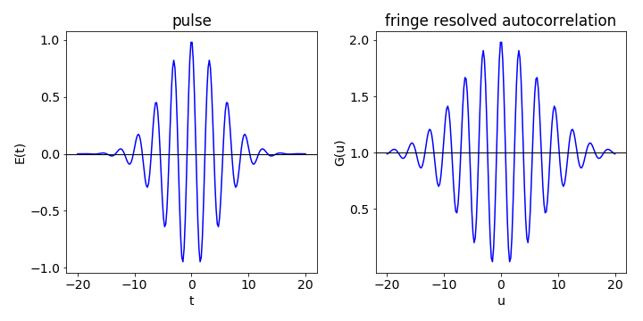

Questions 16 - 21¶
Q16 Optical correlator¶
In example (iii) of Section 8.4 describing the optical correlator, Fig. 32, a special case has been examined because the laser intensity was given as \(\displaystyle e^{-(t/a)^2}\) which represents the envelope of the pulse and ignores the electric field itself. However, it is the amplitude of the laser’s electric field \(E\) that is important, the square of which is the intensity \(I\). A fringe-resolved autocorrelation is recorded if a fast responding photodiode is used to detect the signal; this has the shape of a pulse but with sinusoidal type oscillations within the pulse envelope. The amplitude of \(E\) describes how the electric field of the light varies throughout the pulse. In a transform-limited pulse, the frequency is constant across the pulse duration. In a chirped pulse, the frequency varies, either increasing or decreasing as time progresses. If this could be heard, it would, as the name suggests, sound like a bird’s chirp.
The amplitude profile of a transform limited pulse, can be written as \(\displaystyle E(t) = \cos(\omega t/a)e^{-t^2/(2a^2)}\) where \(a = \tau/\sqrt{2\ln(2)}\) and \(\tau\) is the pulse fwhm and \(\omega\) its central wavelength; Fig. 35 shows the pulse shape.

Figure 35. Electric field \(E(t)\) of a laser pulse, left, and right, first order autocorrelation \(G^1(u)\). The constants are \(a\) = 5 and \(\omega = 10\).
(a) Start by using algebra or Sympy to simplify and calculate the (first-order) amplitude correlation of a laser pulse,
which would be measured from the interferometer if the beam is directly measured on a photodiode at its normal. i.e. not doubled, wavelength. The square is present because the detector measures only the intensity of the light \(| E^*E |\) not the field amplitude \(E\). Make the result into a function and plot using \(a = 5\) and \(\omega = 10\).
(b) The second-order correlation \(G^2(u)\) is made when the two beams overlap in a frequency doubling crystal and then only the ultraviolet light produced is detected. The amount of this is proportional to the square of the total field. The second squared term in the equation is present because the detector measures only the intensity.
The analytical result is complicated, so use Sympy to calculate and then plot the autocorrelation, again using \(a = 5\) and \(\omega = 10\).
(c) Ignore the cosine part of the field \(E\) and so calculate the upper and lower bounds of the second order autocorrelation and add these to the graph. Calculate the fwhm of the upper curve and determine how much wider this is than the pulse \(t^{1/2}\).
(d) The pulse seems to have only one frequency according to the equation for \(E(t)\), but the pulse is short and by time-energy uncertainty a short pulse must have a wide spectral width. Calculate this by Fourier transforming the pulse if \(a\) is \(5\) fs and \(\omega = 10\,\mathrm{ fs^{-1}}\).
Strategy: As the pulse is real, calculating the absolute value has no special effect and the squares can be taken directly. To simplify the calculation, expand out the terms first and collect similar terms together. For example, the second order autocorrelation has terms \(\displaystyle \int E(t)^4dt=\int E(u+t)^4dt\) and \(\int E(t)E(u+t)^3dt = \int E(t)^3E(u+t)dt\).
Q17 Femtosecond laser pulses¶
Femtosecond laser pulses have been assumed to have different shapes such as \(\exp(-| x |/a)\) or sech\(^2(x/a)\) where sech is the reciprocal of the hyperbolic cosine which is cosh, and \(\cosh(x) = (e^x + e^{-x})/2\). The sech\(^2\) function looks very much like a Gaussian.
Calculate the autocorrelation of these two pulse shapes, and work out the pulse-widths and fwhm from each autocorrelation and how much wider these are than the laser pulse that generated them.
Strategy: Start with equation 42, but notice that the absolute value of \(x\) is used. The integration is far simpler if it is assumed that \(a\) is positive and that \(x\) real and positive. There is a discontinuity in the sech\(^2\) integral so care is needed here.
Q18 Bat acoustics¶
Bats produce a range of high frequency acoustic signals that they use for echolocation. In some species, this is a narrow-band constant frequency and in others, it is broadband and chirped in frequency. In yet other species both types are used; the constant frequency when locating prey and the chirped signal when attacking, see Altringham (1996).
A chirped pulse has a frequency that changes during its duration. As bats hunt where there are many other objects around besides insects, tree branches are an example, and being able to discriminate one object from another down to at least \(3\) cm is clearly important because this is the size its prey. Simmons (1971) has devised experiments suggesting that the amplitude of the envelope of the correlation of a bat’s acoustic pulse with that scattered off its prey is used to discrimination between objects. He also suggests that the autocorrelation rather than the cross-correlation is sufficient for this purpose. The larger the amplitude of the correlation envelope between the outgoing and returning signal is, the more difficult it is for the bat to discriminate its prey from another nearby object.
When the correlation envelope is at its maximum amplitude there is only a \(50\)% chance that the prey has been correctly identified; when the convolution envelope is smaller, discrimination of objects separated by \(3\) cm rises to almost \(100\) %.
The amplitude of the envelope of the correlation is hard to determine, but its integral with time is not since at any time it is approximated as the sum of the absolute value of the correlation from all previous times. We will suppose that the size of this integral can instead be used as a measure of the success of prey discrimination. The rather complicated function
very approximately mimics the acoustic pulse of insectivorous bats (Eptesicus fuscus), where time is measured in milliseconds. An object at \(12\) mm returns a signal after \(70 \mu\)s, and this allows the calibration in distance instead of time.
(a) Plot \(S(t)\) for an un-chirped pulse, \(a = 0\), and a chirped pulse, \(a = 60\). Next, calculate and plot the autocorrelation.
(b) Calculate the sum of the autocorrelation with time, and compare this with the experimental data below for the percentage of successful discrimination. (Data measured from Simmons 1971, Fig. 2.)
(c) Explain why an un-chirped pulse is very poor compared to the chirped one, when discriminating between two objects if the bat uses autocorrelation.
Strategy: Use previously used code to calculate the autocorrelation which you may need to modify to make the maximum value of \(t= 1\), and therefore the maximum time equal to \(1\) ms which is \(2\, \mu\)s per point. To plot the summed signal up to a given time, convert time to distance with \(12\) mm = \(70\,\mu\)s.
Q19 FID in NMR¶
Use Python to create an FID, such as might be observed from an NMR experiment on two spin \(1/2\) nuclei, and then calculate the absolute value of the spectrum using an exponential decay, with a lifetime of \(300\) channels and frequencies of \(10/48\) and \(10/45\); assume the FID has the form
where \(x\) is the time, which is in units of the channel number of the data, i.e. \(x\) ranges from \(0 \to 2^{12}\) which is the maximum number of points.
(a) Calculate the FFT and plot its value. Decide whether the real or imaginary parts represent the spectrum.
(b) Add normally distributed noise to the FID \(\sigma = 1.5\); recalculate and plot the FFT.
(c) Apodize the FID by multiplying by \(\displaystyle e^{−x/\tau}\) where \(\tau \) is a large number \(500 \to 1500\) and recalculate the spectrum; comment on its appearance.
(d) Explain why the apodisation improves the signal to noise of the spectrum.
Q20 Chirped laser pulse¶
The shape of the electric field from a femtosecond laser is measured and found to be chirped but is noisy. The pulse follows the equation
The pulse is chirped because its frequency changes throughout the duration of the pulse. The noise is uniformly distributed about zero with a maximum value of \(2\). Time \(t\) is in femtoseconds.
Generate a set of noisy data, then use a Fourier transform method to clean up the data and extract the original signal.
Strategy: Use the method described in Section 10.3. Decide how many data points to use, which will depend on the highest frequency of the pulse, and is determined by the Nyquist frequency, Section 9.2.
Q21 Moving average¶
Use the moving average method to write a recursive algorithm in Python to effect smoothing on a set of data of your choice as shown in Fig. 48.